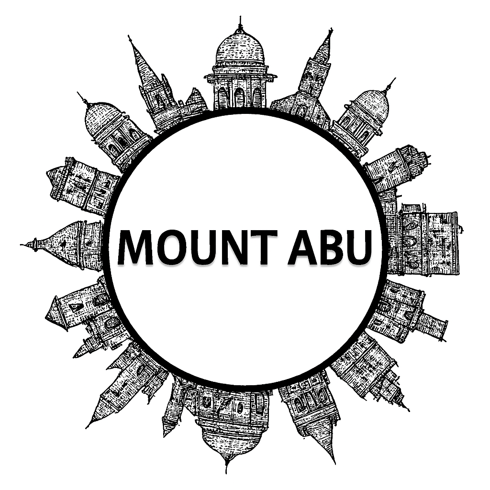

Mount Abu
Mount Abu, the only hill station of Rajasthan, is nestled in the Aravalli Range and offers a refreshing escape from the desert heat. Known for its cool climate and lush greenery, Mount Abu is home to the famous Dilwara Temples, celebrated for their intricate marble carvings. Nakki Lake, surrounded by hills, is a popular spot for boating and leisure. The Sunset Point and Guru Shikhar provide breathtaking views of the surrounding landscapes. Mount Abu also hosts vibrant markets and cultural festivals, making it a blend of natural beauty, spirituality, and tradition.
Mount Abu, the only hill station of Rajasthan, is a refreshing oasis amidst the rugged Aravalli Hills. Known for its cool climate and lush greenery, it offers a striking contrast to the desert landscapes of the state. The serene Nakki Lake, surrounded by hills and legends, is a popular spot for boating and leisure. Mount Abu is also home to the world-famous Dilwara Temples, celebrated for their exquisite marble carvings and spiritual significance. With scenic viewpoints like Sunset Point and Honeymoon Point, along with trekking trails and wildlife in the Mount Abu Sanctuary, the town blends natural beauty, spirituality, and adventure. Often called the “Summer Capital of Rajasthan,” Mount Abu remains a cherished retreat for travelers seeking peace and charm in the lap of nature.
Peaceful Nature Spots
Historical Places
Local Markets
Famous Festivals
Famous Local Food Items
More Details
Gallery